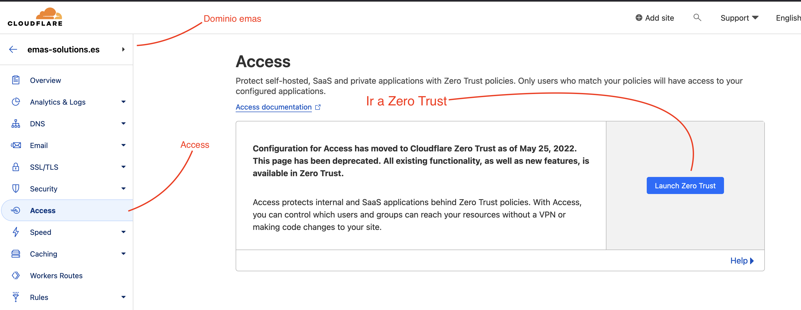
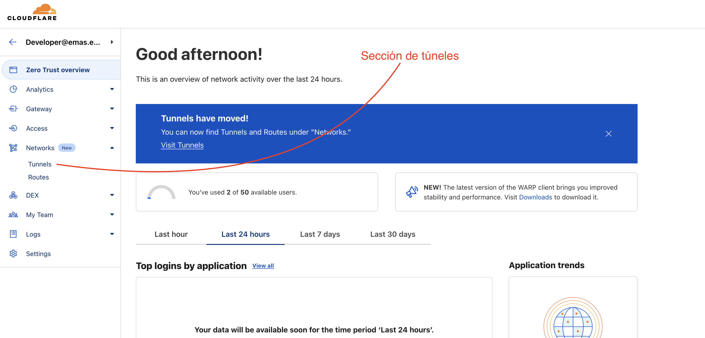
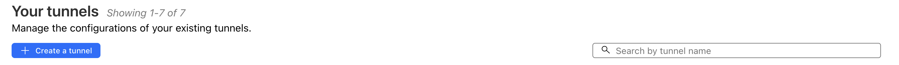

Que es un túnel?
Un túnel de Cloudflare es una conexión segura que permite enrutar el tráfico de un servidor web a través del domino especificado. Esto proporciona beneficios como mejoras en la seguridad, el rendimiento y la disponibilidad del sitio web de manera segura y extremadamente sencilla.
Quiero un nuevo subdominio disponible, como creo el túnel?
És posible que no necesites crear un túnel; cada máquina o servidor que tenga servicios a publicar solo necesita un solo túnel (o ninguno*), ya que éste va a crear nuestra salida de la maquina hacia la gestión de Cloudflare, desde la que se hará la configuración de todos servicios y dominios existentes.
Quiero crear solo un subdominio
La máquina tiene un túnel
Es posible que la máquina en la que se pretende instalar el acceso Cloudflare ya disponga de un túnel instalado.
Si tenemos acceso SSH a la máquina podemos comprobar la existencia de túneles en ésta:
cloudflared tunnel list
En caso de que de que no haya túneles o no exista cloudflared podemos proceder igual ya que la máquina está limpia.
Creación de un túnel (Zero Trust)
Cuando sabemos que una maquina no tiene túneles el proceso de montaje de uno es muy sencillo:
Debemos ir al apartado de Zero Trust → Tunnels de la página Dashboard de Cloudflare.   Una vez aquí vamos a ver listados todos los túneles existentes enlazados a nuestra cuenta. La página muestra una lista de túneles con:
- El nombre del túnel
- La URL o Dirección desde la que se accede al túnel
- Su estado (Funcional o No)
 Para crear un túnel en una máquina en la que no exista ninguno le podemos dar a crear y copiar el script de instalado (seleccionar sistema operativo primero), ésto va a hacer el montaje solo; en cuanto finalize podremos ver el estado conectado al final de ésta página.
Annexo
Túnel maestro
Aunque ésta es una practica no confirmada, es posible que una máquina pueda tener un túnel maestro que permita la creación de subdominios sin necesidad de instalar un túnel en cada máquina de la misma red.
Si en la configuración al montar un túnel modificamos la parte de localhost por una ip, podemos acceder a una maquina en la red de la máquina que tiene el túnel (siempre que ésta sea accesible por ese puerto por la red local).
Ésto es útil para montar un router en la red local que permita el acceso a todos los servicios de la red local a través de un solo túnel y sin necesidad de instalarlo en cada máquina. Cosa que conlleva a una mayor seguridad y facilidad de gestión.